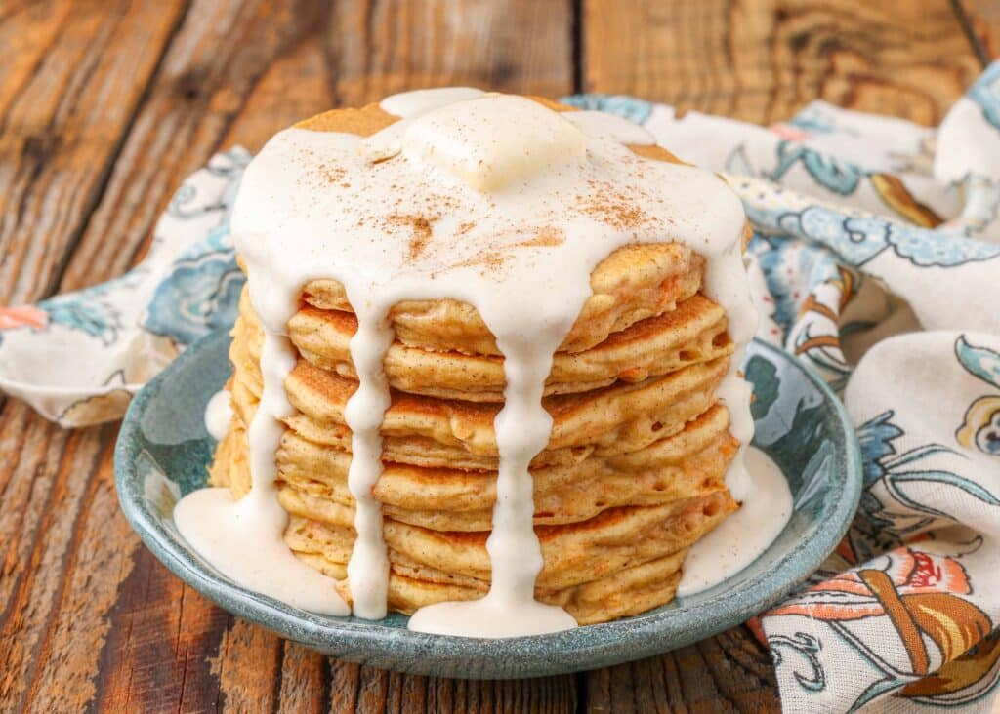

Carrot Cake Pancakes

Description
Carrot Cake Pancakes bring the delicious flavors of carrot cake to your
breakfast table. The batter combines classic buttermilk with grated
carrots, cinnamon, and pumpkin pie spice for a taste that's just like
dessert. These pancakes are thick, fluffy, and sweetened with light
brown sugar and vanilla extract. Top them off with a creamy cream cheese
frosting drizzle for an extra indulgent treat.
Making these pancakes is super easy and totally worth it. Whisk together
the dry ingredients, then mix in the buttermilk, brown sugar, egg, and
vanilla. Fold in the carrots and melted butter. While the batter sits,
whip up the cream cheese frosting. Cook the pancakes on a buttered
griddle, flipping once bubbles form. Stack them up drizzle with
frosting, and sprinkle with raisins, nuts, and coconut flakes. Enjoy
this yummy breakfast that's sure to become a new family favorite!
Ingredients
- 1 ¼ cups all-purpose flour
- 1 ½ teaspoons baking powder
- 1 teaspoon ground cinnamon
- ½ teaspoon pumpkin pie spice
- ½ teaspoon baking soda
- ¼ teaspoon table salt
- 1 cup whole buttermilk
- ¼ cup packed light brown sugar
- 1 large egg
- 1 teaspoon vanilla extract
- ¾ cup finely grated carrot
- 3 tablespoons unsalted butter, melted (plus more for griddle)
- 3 ounces cream cheese, softened
- 1 tablespoon whole milk
- 2 tablespoons powdered sugar
- ½ teaspoon vanilla extract (for frosting)
- 3 tablespoons golden raisins
- 3 tablespoons toasted chopped pecans or walnuts
- 3 tablespoons toasted unsweetened coconut flakes
- 1 tablespoon finely chopped candied ginger (optional)
Steps
- Mix Dry Ingredients: In a large bowl, whisk together the flour,
baking powder, cinnamon, pumpkin pie spice, baking soda, and salt.
- Combine Wet Ingredients: In a separate bowl, mix the buttermilk,
brown sugar, egg, and vanilla extract until well combined.
- Combine Wet and Dry Ingredients: Add the wet ingredients to the dry
ingredients, stirring until just combined. Fold in the grated carrot
and melted butter until evenly incorporated. Set the batter aside.
- Make Cream Cheese Frosting: In a medium bowl, whisk together the
softened cream cheese, milk, powdered sugar, and vanilla extract
until smooth. Set aside.
- Prepare Topping: In a small bowl, mix together the golden raisins,
toasted nuts, coconut flakes, and candied ginger (if using). Set
aside.
- Heat Griddle: Preheat a large nonstick skillet or griddle over
medium heat and grease it with butter.
- Cook Pancakes: Scoop 1/4 cup of batter per pancake onto the griddle.
Cook until bubbles form on the surface and the edges look dry, about
2-3 minutes. Flip and cook for another minute, or until the pancakes
are fluffy and slightly firm. Repeat with the remaining batter,
adding more butter to the griddle as needed.
- Serve Pancakes: Divide the pancakes evenly among plates. Drizzle the
cream cheese frosting over the top and sprinkle with the prepared
topping.